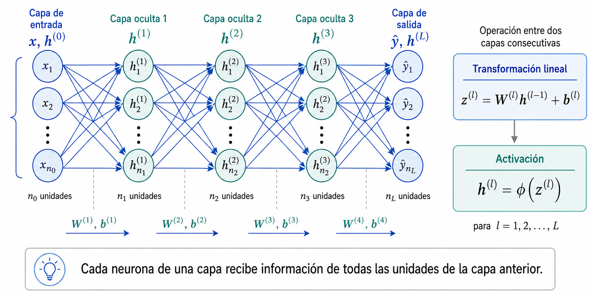

flowchart LR
A[MLP] --> B[CNN]
B --> C[Autoencoder]
C --> D[U-Net]
D --> E[Transformer]
E --> F[State Space Models]
F --> G[Mamba]
Unidad 1 · Fundamentos de IA
Al finalizar la clase deberíamos poder:
flowchart LR
A[MLP] --> B[CNN]
B --> C[Autoencoder]
C --> D[U-Net]
D --> E[Transformer]
E --> F[State Space Models]
F --> G[Mamba]
No es una historia de reemplazos.
Es una historia de nuevas formas de organizar el flujo de información.
Una arquitectura define:
\[ \hat y=f_\theta(x) \]
La pregunta no es solamente qué aprende \(\theta\), sino:
¿cómo construimos \(f_\theta\)?
Una arquitectura contiene supuestos sobre el problema.
Nuestros datos no son vectores genéricos:

flowchart LR
X[Entrada x] --> H1[Capa oculta 1]
H1 --> H2[Capa oculta 2]
H2 --> Y[Salida ŷ]
Durante el forward pass:
\[ x \rightarrow h^{(1)} \rightarrow h^{(2)} \rightarrow \hat y \]
La información avanza hacia la salida, sin ciclos internos.
Supongamos:
\[ h=W_1x \]
y luego:
\[ y=W_2h \]
Entonces:
\[ y=W_2W_1x=Wx \]
Dos transformaciones lineales siguen siendo una transformación lineal.
La profundidad por sí sola no produce no linealidad.
La activación permite que la red represente relaciones complejas:
\[ h=\phi(Wx+b) \]
\[ \sigma(x)=\frac{1}{1+e^{-x}} \]
Puede saturarse.
\[ \tanh(x) = \frac{e^x-e^{-x}}{e^x+e^{-x}} \]
Salida entre -1 y 1.
\[ \operatorname{ReLU}(x)=\max(0,x) \]
\[ \operatorname{LeakyReLU}(x)= \begin{cases} x & x>0\\ \alpha x & x\leq0 \end{cases} \]
Mantiene gradiente para \(x<0\).
También aparecen GELU, SiLU/Swish y Mish.
Una imagen CT de:
\[ 512\times512 \]
tiene:
\[ 262\,144 \]
píxeles.
Una capa con 1000 neuronas requeriría aproximadamente:
\[ 262\,144\times1000 \approx 262\text{ millones de pesos} \]
Y además perderíamos explícitamente la estructura espacial.
Una CNN utiliza pequeños filtros que se desplazan sobre la imagen.
\[ Y(i,j) = \sum_m\sum_n K(m,n)\,I(i+m,j+n) \]
La operación es:
\[ \begin{bmatrix} 2&1&0\\ 3&5&1\\ 0&2&4 \end{bmatrix} \]
\[ \begin{bmatrix} 1&0&-1\\ 1&0&-1\\ 1&0&-1 \end{bmatrix} \]
La salida local resulta de una suma ponderada.
Procesamiento clásico:
\[ \text{kernel diseñado por el experto} \]
Deep Learning:
\[ \text{kernel inicial} \xrightarrow{\text{backpropagation}} \text{kernel aprendido} \]
En muchas librerías la operación es técnicamente una correlación cruzada, pero seguimos llamándola convolución.
El mismo kernel se aplica en toda la imagen.
flowchart LR
K[Kernel 3×3] --> A[Región 1]
K --> B[Región 2]
K --> C[Región 3]
Esto produce:
Entrada:
\[ 1\times H\times W \]
Después de una convolución:
\[ 32\times H\times W \]
La red ya no representa solo intensidades.
Cada canal codifica una característica aprendida.
\[ s=1 \]
desplazamiento de un píxel.
\[ s=2 \]
puede producir downsampling.
Agrega valores alrededor de la imagen.
Permite controlar el tamaño espacial de la salida.
Una unidad profunda puede depender de una región cada vez mayor de la entrada.
Para convoluciones \(3\times3\) con stride 1:
\[ 3\times3 \rightarrow 5\times5 \rightarrow 7\times7 \rightarrow\dots \]
Para identificar anatomía necesitamos combinar:
En una ventana \(2\times2\):
\[ \begin{bmatrix} 1&3\\ 2&8 \end{bmatrix} \rightarrow 8 \]
Efectos:
En arquitecturas modernas también se usa convolución con stride.
flowchart LR
A[Entrada] --> B[Convolution]
B --> C[Normalization]
C --> D[Activation]
D --> E[Salida]
Un patrón frecuente:
\[ \boxed{\text{Conv}} \rightarrow \boxed{\text{Norm}} \rightarrow \boxed{\text{ReLU}} \]
\[ \hat{x} = \frac{x-\mu_B} {\sqrt{\sigma_B^2+\epsilon}} \]
\[ y=\gamma\hat{x}+\beta \]
Los parámetros \(\gamma\) y \(\beta\) se aprenden.
BatchNorm ayudó a estabilizar el entrenamiento de muchas redes profundas.
Las imágenes volumétricas consumen mucha memoria.
Por eso podemos entrenar con:
\[ B=1,\ 2,\ 4 \]
Con batch size pequeño las estadísticas de BatchNorm pueden ser poco estables.
Alternativas frecuentes:
\[ C\times H\times W \]
Kernel típico:
\[ 3\times3 \]
\[ C\times D\times H\times W \]
Kernel típico:
\[ 3\times3\times3 \]
Pero en imagen médica:
\[ \Delta x \neq \Delta y \neq \Delta z \]
Más profundidad puede permitir:
Pero entrenar redes muy profundas introduce dificultades de optimización.
Una respuesta histórica: conexiones residuales.
En ResNet:
\[ y=F(x)+x \]
flowchart LR
X[x] --> F[Bloque F(x)]
X --> S[Skip]
F --> A((+))
S --> A
A --> Y[y]
Facilitan el flujo de información y gradientes.
flowchart LR
X[Entrada x] --> E[Encoder]
E --> Z[Latente z]
Z --> D[Decoder]
D --> Y[Reconstrucción x̂]
\[ z=f_\theta(x) \]
\[ \hat x=g_\phi(z) \]
Podemos entrenar minimizando:
\[ \mathcal{L}=\|x-\hat{x}\|^2 \]
La representación \(z\) debe conservar información útil.
Aplicaciones:
No necesitamos reconstruir la misma entrada.
flowchart LR
X[CT] --> E[Encoder]
E --> Z[Representación]
Z --> D[Decoder]
D --> M[Máscara]
El decoder puede producir:
U-Net fue propuesta en 2015 para segmentación biomédica.
flowchart LR
A[Encoder] --> B[Bottleneck]
B --> C[Decoder]
La estructura combina:
\[ \boxed{\text{encoder}} + \boxed{\text{decoder}} + \boxed{\text{skip connections}} \]
El encoder reduce resolución:
\[ 256^2 \rightarrow 128^2 \rightarrow 64^2 \rightarrow 32^2 \]
A cambio obtiene:
Pregunta que responde bien:
¿qué estoy observando?
Para segmentar no alcanza con saber qué estructura está presente.
Necesitamos saber:
¿dónde está exactamente cada borde?
El downsampling elimina resolución espacial.
flowchart LR
E1[Encoder 256] --> E2[128]
E2 --> E3[64]
E3 --> B[32]
B --> D3[64]
D3 --> D2[128]
D2 --> D1[256]
E1 -. skip .-> D1
E2 -. skip .-> D2
E3 -. skip .-> D3
Las características de alta resolución llegan directamente al decoder.
\[ \boxed{\text{contexto semántico}} + \boxed{\text{detalle espacial}} \rightarrow \boxed{\text{segmentación}} \]
Una aclaración:
Mismo nombre informal, función distinta.
La idea se extiende a:
\[ C\times D\times H\times W \]
Aplicaciones:
El gran limitante práctico es la memoria.
Para volúmenes grandes suelen utilizarse:
ResUNet combina:
Filtra qué características del encoder pasan al decoder.
\[ \text{skip}\rightarrow\text{attention gate}\rightarrow\text{decoder} \]
Introduce conexiones más densas e intermedias entre encoder y decoder.
Ambas conservan la lógica multiescala.
nnU-Net no es simplemente otra U-Net.
Es un sistema auto-configurable que adapta:
El pipeline completo importa tanto como la arquitectura.
Una convolución \(3\times3\) empieza preguntando:
¿qué ocurre cerca de esta posición?
Para relacionar regiones muy distantes necesitamos:
¿Podemos construir interacciones globales más directas?
Para representar un elemento queremos saber:
¿qué otros elementos son relevantes para él?
flowchart LR
A[Elemento i] --> B[Buscar relaciones]
B --> C[Ponderar información]
C --> D[Nueva representación]
La interacción ya no está determinada solamente por vecindad.
Para cada token generamos:
\[ Q=XW_Q,\qquad K=XW_K,\qquad V=XW_V \]
Query
¿Qué estoy buscando?
Key
¿Qué contiene este elemento?
Value
¿Qué información recupero?
\[ \operatorname{Attention}(Q,K,V) = \operatorname{softmax} \left( \frac{QK^\top}{\sqrt{d_k}} \right)V \]
Varias cabezas permiten aprender relaciones diferentes:
\[ \text{head}_1,\dots,\text{head}_h \]
Pero además debemos incorporar posición:
\[ \boxed{\text{contenido}} + \boxed{\text{posición}} \]
Sin posición, la auto-atención no conoce explícitamente el orden espacial/secuencial.
flowchart TB
X[Input] --> N1[Normalization]
N1 --> A[Multi-Head Attention]
A --> R1[Residual +]
X --> R1
R1 --> N2[Normalization]
N2 --> F[Feed-Forward]
F --> R2[Residual +]
R1 --> R2
R2 --> Y[Output]
Reaparecen:
Una imagen se divide en patches:
flowchart LR
I[Imagen] --> P[Patches]
P --> T[Tokens]
T --> E[Embeddings]
E --> TR[Transformer]
Ejemplo:
\[ 224\times224 \quad\text{con patches}\quad 16\times16 \]
| CNN | Transformer |
|---|---|
| interacción local | interacción flexible |
| fuerte sesgo espacial | menor sesgo local |
| kernels compartidos | atención |
| jerarquía natural | requiere diseño de escala |
| muy eficiente localmente | atención global costosa |
No existe un ganador universal.
Puede ser útil cuando la decisión depende de:
Esto es especialmente atractivo en volúmenes 3D.
UNETR combina un encoder Transformer con un decoder tipo U-Net.
flowchart LR
V[Volumen] --> T[Transformer encoder]
T --> B[Bottleneck]
B --> D[Decoder convolucional]
D --> S[Segmentación]
Las representaciones intermedias se conectan con el decoder.
La atención global completa es costosa.
Swin Transformer utiliza:
Combina:
\[ \boxed{\text{Swin Transformer}} + \boxed{\text{decoder tipo U-Net}} + \boxed{\text{skip connections}} \]
Es un buen ejemplo de arquitectura híbrida:
ideas de CNN, U-Net y Transformers en un mismo modelo.
Para \(N\) tokens, la atención estándar construye aproximadamente:
\[ N\times N \]
relaciones.
Costo:
\[ O(N^2) \]
Si:
\[ N\rightarrow 10N \]
entonces:
\[ N^2\rightarrow100N^2 \]
Un CT puede tener del orden de:
\[ 512\times512\times500 \]
voxels.
Incluso trabajando con patches, el número de tokens puede ser grande.
Necesitamos capturar contexto amplio sin que memoria y cómputo crezcan demasiado.
Otra estrategia es mantener un estado interno:
\[ h_t=f(h_{t-1},x_t) \]
\[ y_t=g(h_t) \]
flowchart LR
X1[x₁] --> H1[h₁]
H1 --> H2[h₂]
X2[x₂] --> H2
H2 --> H3[h₃]
X3[x₃] --> H3
El estado funciona como memoria.
Mamba utiliza Selective State Space Models.
No es un Transformer.
Su idea central es permitir que el sistema seleccione dinámicamente:
qué información conservar y qué información descartar.
La selectividad depende del contenido de la entrada.
Cada token consulta otros tokens mediante atención.
Costo de la atención estándar:
\[ O(N^2) \]
La información se propaga mediante un estado selectivo.
Escalamiento respecto de la secuencia:
\[ O(N) \]
La motivación es especialmente atractiva en 3D:
Arquitecturas como SegMamba exploran esta dirección para segmentación médica 3D.
Es un área todavía en evolución.
| Arquitectura | Idea central | Sesgo principal |
|---|---|---|
| MLP | conectividad densa | poca estructura explícita |
| CNN | convolución local | localidad |
| Autoencoder | compresión | representación latente |
| U-Net | multiescala + skip | localización |
| Transformer | atención | relaciones flexibles |
| Mamba | estado selectivo | contexto largo eficiente |
La arquitectura debe responder al problema, no a la moda.
\[ \boxed{\text{datos}} + \boxed{\text{preprocesamiento}} + \boxed{\text{arquitectura}} + \boxed{\text{loss}} + \boxed{\text{optimización}} + \boxed{\text{evaluación}} \]
En Física Médica además importan:
La mejor arquitectura es la que introduce el flujo de información adecuado para el problema.